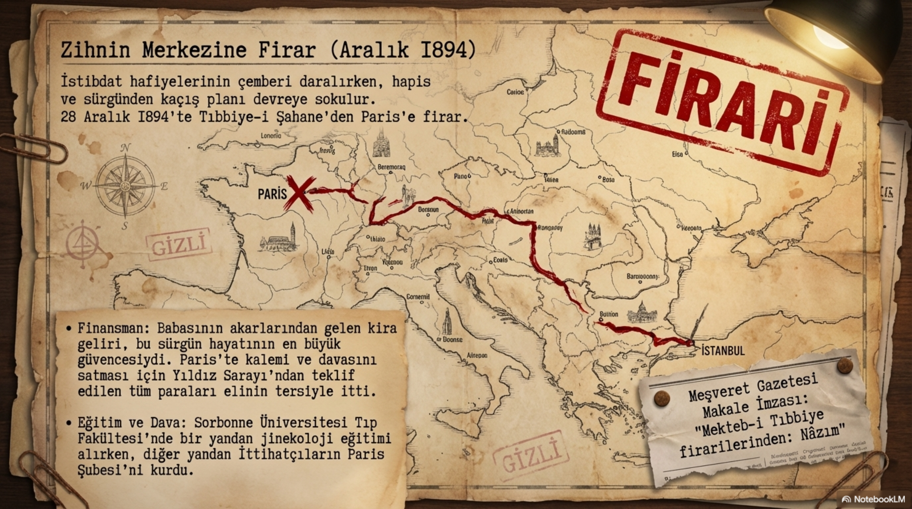
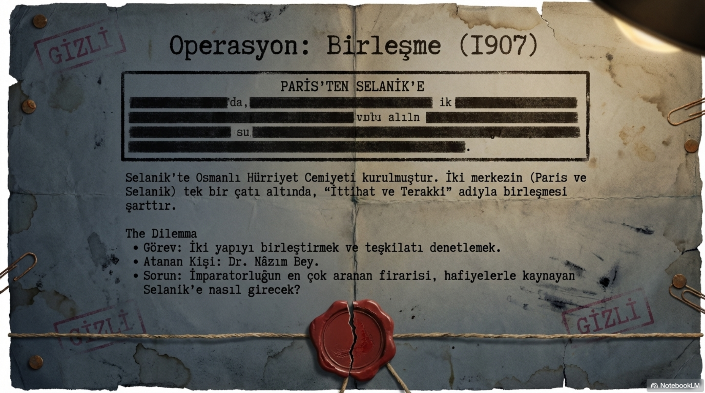
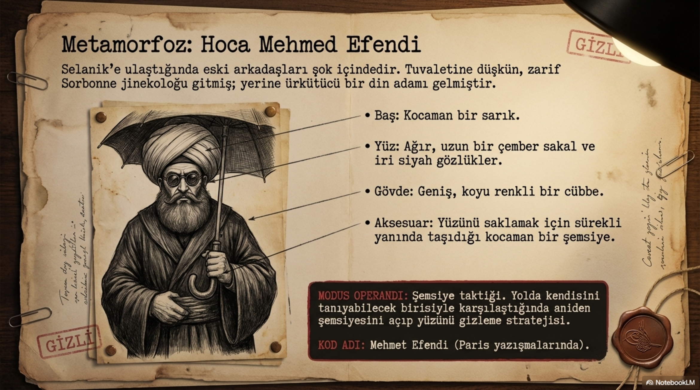
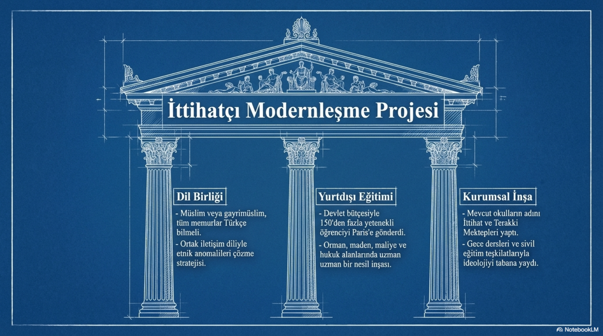

Bölüm 01
İhtilalin vitrininde değil, sinir ucunda duran adam
İttihat ve Terakki denilince geniş kitlelerin aklına önce Enver’in üniforması, Talat’ın siyasi ağırlığı, Cemal’in idareci yüzü ya da Ahmed Rıza’nın Paris’teki fikir mücadelesi gelir. Dr. Nâzım ise daha tuhaf bir yerde durur. O, büyük fotoğrafta çoğu zaman kenarda görünür; fakat fotoğrafın nasıl çekildiğini, kimin hangi kapıdan içeri alınacağını, hangi şehirde hangi ismin kullanılacağını, hangi örgütle temas kurulacağını belirleyen isimlerden biridir. Kısacası, sahnede az görünür ama kuliste çok çalışır.
Bu yüzden Dr. Nâzım’ı yalnızca ‘İttihatçı lider’ diye anlatmak yetmez. Onu anlatmak için gizli mektupları, müstear adları, posta kutularını, tahlif merasimlerini, saklanılan evleri, Paris kahvelerini, Selanik sokaklarını, İzmir’deki küçük tütüncü dükkânını ve Meşrutiyet sonrası nüfus politikalarını birlikte düşünmek gerekir. Adamın hayatı neredeyse şu sorunun cevabıdır: Bir tıp öğrencisi hangi şartlarda doktorluktan çok örgütçülüğe inanır?
Bu sorunun cevabı Selanik’te başlar. Dr. Nâzım 1872’de Selanik’te doğdu. Aslen Avrethisarlıydı. Babası Hacı Ahmet Efendi esnaftı ve Nâzım küçük yaşta babasını bir cinayet sonucu kaybetti. Bu kayıp, hayatının arka planında sessiz ama sert bir iz bıraktı. İlk eğitimini Selanik’te aldıktan sonra tıp okumak için İstanbul’a yöneldi. 1889’da İstanbul Askerî Tıbbiye İdadisi’ne, 1892’de Mekteb-i Tıbbiye-i Şahane’ye girdi. Asıl kırılma da burada yaşandı.
Tıbbiye o dönemde yalnızca doktor yetiştiren bir okul değildi; imparatorluğun en hareketli düşünce laboratuvarlarından biriydi. Askerî okullar Batı’daki gelişmelere, modern bilime ve yeni siyasal fikirlere daha açıktı. Öğrenciler hem devletin çöküşünü yakından hissediyor hem de Avrupa’nın askerî, teknik ve siyasi üstünlüğünü derslerin, kitapların ve hocaların içinden görüyordu. İttihatçılığın bu okullardan çıkması tesadüf değildi. Modernleşmeyi sadece kitapta değil, kendi meslek hayatlarının zorunlu gerçeği olarak görüyorlardı.
Bölüm 02
Tıbbiyeli firar: Zihnin merkezine kaçış
Nâzım’ın zihnini ilk sarsan metinler Namık Kemal, Şinasi ve Ziya Paşa çizgisinden geldi. ‘Vatan’ ve ‘hürriyet’ kelimeleri bugün bize alışılmış gelebilir; fakat o dönemin Tıbbiyesi’nde bu kelimeler öyle rahatça konuşulan kelimeler değildi. Abdülhamid yönetimi, okulun her köşesinde zararlı yayın aratıyor, öğrencilerin bir araya gelmesini bile şüpheli buluyordu. Namık Kemal’in bir yazısının öğrencinin üzerinde çıkması sorgu, hapis ve sürgün ihtimalini beraberinde getirebiliyordu. İşte bu atmosferde Nâzım, edebiyatla başlayan bir uyanışı siyasî örgütçülüğe çevirdi.

Mekteb-i Tıbbiye’de kurulan İttihâd-ı Osmanî Cemiyeti, İttihat ve Terakki’nin ilk çekirdeğiydi. Nâzım kurucular arasında değildi; fakat kısa sürede Cemiyet kadroları içinde kendine yer buldu. Hitabet gücü, insanları ikna edebilmesi, sert ama inandırıcı mizacı onu sıradan bir üyeden fazlası haline getirdi. Propaganda İttihatçıların en güçlü silahlarından biriydi ve Nâzım bu silahı kullanmayı erken öğrendi.
1894 yılına gelindiğinde İstanbul’daki gizli faaliyetlerin sürdürülebilir olmadığı anlaşıldı. Hafiyeler bilgi topluyor, baskı daralıyor, öğrenciler üzerindeki çember sıkışıyordu. Cemiyet için yeni bir merkez gerekiyordu. Paris bunun için biçilmiş kaftandı. Hem Jön Türklerin toplandığı yerdi hem Avrupa kamuoyuna seslenme imkânı vardı hem de Abdülhamid idaresinin doğrudan kontrolünün dışında kalıyordu. Nâzım, 28 Aralık 1894’te Tıbbiye’den firar ederek Paris’e gitti.
Bu firar, romantik bir kaçış hikâyesi değildir. Nâzım hem eğitimine devam edecek hem de Cemiyetin Paris şubesini kurmak için çalışacaktı. Yeni adresi Sorbonne Üniversitesi Tıp Fakültesi oldu; fakat onun asıl mesaisi sınıftan çok örgüt masalarında geçti. Nitekim doktor unvanını yaşıtlarından çok sonra, 1906’da alabildi. Bu bile tek başına çok şey söyler. Nâzım için doktorluk meslek, İttihatçılık hayat biçimiydi.
Paris’e giden öğrencilerin ilk görevi, orada Cemiyetin merkezini kurmak ve Ahmed Rıza’yı hareketin başına çekmekti. Nâzım bu işin en aktif ismiydi. Ahmed Rıza ile temas kurdu, Cemiyetin ilk nizamname taslağını ona ulaştırdı, uzun görüşmeler sonunda onu bu yapının liderliğine ikna etti. Cemiyet adının İttihat ve Terakki’ye dönüşmesinde Ahmed Rıza’nın etkisi belirleyici olsa da o etkiyi harekete geçiren kapıyı açan isimlerden biri Nâzım’dı.
Bölüm 03
Paris’in kara kutusu
Paris yıllarında Dr. Nâzım, yalnızca yazı yazan ya da toplantıya katılan bir muhalif değildi. Cemiyetin haberleşme, kayıt, para, yayın ve kadro meselelerinin içinde yer aldı. Meşveret gazetesinin çıkarılmasına öncülük etti. İlk sayısı 1 Aralık 1895’te çıkan Meşveret, Jön Türklerin Avrupa’daki en önemli yayın organlarından biri haline geldi. İncecik kâğıtlara basılan yayınlar, yabancı postaneler ve gizli bağlantılarla Osmanlı topraklarına sokuluyordu. Bugünün okuru için küçük bir gazete gibi görünebilir; ama o gün için bu, doğrudan rejimle mücadele demekti.
Abdülhamid’in muhalefetle mücadelesi yalnızca baskıdan ibaret değildi. Burada padişahın akıllıca, soğukkanlı, yer yer çakalca diyebileceğimiz bir siyaseti vardı. Bir kısmını memuriyetle, bir kısmını maaşla, bir kısmını elçilik kâtipliğiyle, bir kısmını yurda dönüş kolaylığıyla etkisizleştirmeye çalıştı. Muhalefetin matbaa harflerini satın aldırmak gibi doğrudan yayını boğan hamleler de devreye sokuldu. Bazı isimler bu teklifleri kabul etti. Fakat Ahmed Rıza, Dr. Nâzım, Âkil Muhtar ve Nuri Ahmet gibi isimler ne rütbe ne maaş ne de memuriyet karşılığında davalarından döndüler.
Bu ayrıntı önemlidir. Çünkü Dr. Nâzım’ın karakterinde parayla, konforla, resmî görevle kolay ikna edilecek bir taraf yoktu. Hatta ilerleyen yıllarda devlet malına karşı titizliğiyle, kişisel harcamalarda sertliğiyle, makam arabasına bile mesafeli duruşuyla anılacaktır. Onda bazen cimriliğe varan bir tutumluluk, bazen de dava için kendini tüketen bir inat görülür. Bu ikisi çelişki gibi durur ama aslında aynı kökten gelir: Nâzım, kendince boşa harcanan her şeyi ihanet gibi görmeye yatkın bir adamdır.
Paris’teki Cemiyet içinde fikir ayrılıkları da eksik değildi. 1902 kongresinde en büyük tartışmalardan biri yabancı müdahale meselesiydi. Prens Sabahaddin çizgisine yakın olanlar, Abdülhamid idaresini devirmek için İngiltere başta olmak üzere dış müdahaleyi mümkün ve hatta gerekli görebiliyordu. Ahmed Rıza ve Dr. Nâzım’ın yer aldığı çizgi buna karşı çıktı. Onlara göre hürriyet, yabancı bir devletin Osmanlı’ya müdahalesiyle gelirse bunun adı kurtuluş değil başka bir bağımlılık olurdu. Bu tavır, Nâzım’ın bütün siyasetini anlamak için anahtar niteliğindedir: Sert merkeziyetçilik, bağımsızlık hassasiyeti, dış müdahaleye öfke ve devletin dağılmasına karşı panik.
Bir dönem Cemiyetin mahrem defterleri ve kayıtları da Nâzım’ın eline geçti. Bu yüzden onu Paris şubesinin kara kutusu gibi düşünmek yanlış olmaz. Kim kiminle temas kuruyor, hangi adresten mektup gidiyor, hangi isim hangi numarayla yazışıyor, hangi şube ne durumda; bütün bunlar onun zihninde ve elindeki evrakta birleşiyordu. İttihatçılığın romantik tarafı kadar bürokratik, kayıtçı, disiplinli tarafı da vardı. Dr. Nâzım bu tarafın önemli taşıyıcılarından biriydi.
Bölüm 04
Operasyon: Paris ile Selanik’i birleştirmek
1905 sonrasında İttihatçılık yeni bir evreye girdi. Paris’teki eski muhalefet hattı yıpranmış, dağılmış, tartışmalarla yorulmuştu. Dr. Bahaeddin Şakir’in Paris’e gelişi ve Dr. Nâzım’la kurduğu ortak çalışma, Cemiyetin yeniden toparlanmasında belirleyici oldu. Bu ikili, İttihatçılığı yalnızca yazı ve fikir meselesi olmaktan çıkarıp daha disiplinli, daha icraatçı, daha örgütlü bir çizgiye taşımaya başladı.

Aynı dönemde Selanik’te Osmanlı Hürriyet Cemiyeti kurulmuştu. Rumeli’deki askerî ve sivil kadrolar, Abdülhamid yönetimine karşı daha doğrudan hareket etmeye hazırdı. Paris ile Selanik’in birleşmesi kaçınılmazdı; fakat bunu yapmak kolay değildi. Çünkü iki yapının dili, tecrübesi, kadro disiplini ve risk alma biçimi farklıydı. Paris tarafı daha eski, daha entelektüel ve daha ihtiyatlıydı. Selanik tarafı daha sıcak, daha askerî, daha sahaya dönüktü. Bu iki damarı birleştirmek için güvenilir, eski, tanınan ama gerektiğinde ortadan kaybolabilecek bir isim lazımdı. Görev Dr. Nâzım’a verildi.
Fakat Dr. Nâzım o sırada ülkenin en çok aranan isimlerinden biriydi. Hakkında idam hükmü vardı. Selanik’e normal bir yolculukla gelmesi mümkün değildi. Plan karmaşıktı: Atina üzerinden geçilecek, Yunan komitecilerle temas kurulacak, gerektiğinde takas yapılacak, kimlik değiştirilecek, yol boyunca dikkat çekilmeyecekti. İşler planlandığı gibi gitmedi. Nâzım Atina’da iki ay kadar mahsur kaldı. Sonunda elde edilen bazı belgeler üzerinden Yunan komitecilerle kurulan pazarlık sayesinde Selanik’e geçebildi.
Haziran 1907’de Selanik’e ulaştığında artık eski Nâzım değildi. Kendisini tanıyanların karşısına modern giyimli bir Parisli doktor olarak değil, başında sarık, sırtında cübbe, yüzünde sakal, burnunda iri siyah gözlükler bulunan bir hoca olarak çıktı. İşte Hoca Mehmed Efendi sahneye burada girdi. Bu sahne başlı başına film gibidir. Salon beyefendisi Nâzım gitmiş, yerine sokakta dikkat çekmemeye çalışan ama aslında bütün şehrin damarına girmeye hazırlanan bir hoca efendi gelmişti.
Selanik’te Mithat Şükrü ve Nafiz Bey gibi isimlerin evlerinde saklandı. Öyle gizli yaşadı ki ev halkı bile mendillerindeki ‘N’ harfinin ne anlama geldiğini merak edecek hale geldi. Yolda kendisini tanıyabilecek biriyle karşılaşırsa şemsiyesini açıp yüzünü saklıyordu. Bir gün Paris’ten tanıyan bir doktor onu yürüyüşünden tanıyınca ortalık karıştı. Talat devreye girerek bu doktoru susturmak zorunda kaldı. Bu ayrıntılar tarih kitaplarının kenarında küçük görünür ama aslında örgüt hayatının gerçeğini anlatır: İhtilal bazen büyük nutuk değil, sokakta yürürken yüzünü şemsiyeyle saklama sanatıdır.
Bölüm 05
Hoca Mehmed’den Tütüncü Yakup’a
Selanik’teki ilk izlenimi pek parlak değildi. Osmanlı Hürriyet Cemiyeti’nin bazı uygulamalarını fazla acemi ve ihtiyatsız buldu. Ona göre içeride çalışmak, dışarıdaki gibi kayıt tutarak ve isim bırakarak yapılamazdı. İnsanlar isimlerinin bir yerde yazılı durmasından korkuyordu. Kahvehane masasında yemin metni bırakmak gibi hareketler, örgütü büyütmekten çok hafiyelerin işini kolaylaştırırdı. Nâzım’ın Selanik raporlarında görülen şey, onun yalnızca heyecanlı bir propagandist olmadığıdır. O aynı zamanda güvenlik, kadrolaşma ve zamanlama konusunda sert bir denetçidir.

Sonunda Paris ile Selanik arasındaki birleşme süreci tamamlandı. 1907 sonbaharında iki yapı İttihat ve Terakki adı altında birleşti. Bu birleşme, 1908’e giden yolun en kritik dönemeçlerinden biriydi. Çünkü hareket artık sadece Avrupa’da yazı yazan sürgünlerden ya da İstanbul’da gizli okuma halkalarından ibaret değildi. Rumeli’de subaylara, memurlara, yerel ağlara ve gerektiğinde silahlı direnişe uzanan bir örgüt haline geliyordu. Dr. Nâzım bu dönüşümün bağlantı adamıydı.
Selanik görevinin ardından bu kez İzmir’e gitmesi istendi. Çünkü Rumeli’de başlayan hareketin Anadolu ve Ege bağlantısının güçlenmesi gerekiyordu. İzmir Kolordusu özellikle önemliydi. Rumeli’de bir ihtilal başladığında Abdülhamid’in dayanabileceği kuvvetlerden biri İzmir hattı olabilirdi. Bu yüzden İzmir’deki subayların, aydınların ve güvenilir gençlerin Cemiyete kazandırılması gerekiyordu. Dr. Nâzım yine kılık değiştirdi. Bu defa sahneye Tütüncü Yakup Ağa çıktı.
İzmir’de İkiçeşmelik’te, Asmalı Mescid’in karşısında küçük bir dükkân açtı. Kapısına kırık dökük bir tabela astı: Tütüncü Yakup. Hem tütüncülük hem aktarlık yapıyor, gerekirse fes kalıplıyor, dikkat çekmemek için abdest alıp mescide gidiyordu. Fakat bu rolün içinde bile Nâzım kendini tamamen saklayamıyordu. Dükkânın üst katında Fransızca kitaplar, dergiler, gazeteler ve tıp kitapları duruyordu. Yemek yerken Avrupa usulü çatal bıçak kullanması bile onun ‘sıradan tütüncü’ rolünü ele veriyordu. Yani adam sahaya inmişti ama Paris de çantasından çıkmıyordu.
İzmir’de Halil Menteşe ile karşılaştığında ona iki talimat verdi: Yolda selam verme, bana ait en küçük kâğıdı üzerinde taşıma. Bu iki cümle bile dönemin güvenlik mantığını gösterir. Nâzım burada kolordu zabitleriyle gençleri örgütlemeye çalıştı. Hüseyin Lütfi, İsmail Canbulat, Bursalılı Tahir, Uşakizade Muammer, Süleyman Askerî gibi isimlerle temaslar kuruldu. Hadika-i Maarif Mektebi, İzmir teşkilatlanmasının önemli merkezlerinden biri haline geldi. Yemin merasimleri düzenlendi; siyah-kırmızı bezler, Kur’an-ı Kerim ve revolver eşliğinde yapılan bu merasimler, İttihatçılığın hem modern hem ritüelci doğasını gösteriyordu.
İsmet İnönü’nün yıllar sonra anlattığı izlenim de bu dönemin gücünü açıkça gösterir. İzmir’de Yakup Ağa adıyla dolaşan Dr. Nâzım, Sultan Hamid idaresinin tehlikelerini öyle taşkın ve etkili anlatıyordu ki genç subaylar üzerinde büyüleyici bir tesir bırakıyordu. Burada ‘büyü’ kelimesi boşuna değildir. Nâzım’ın siyaseti biraz da buydu: Önce insanın zihnini yakalamak, sonra onu örgütün disiplinine sokmak.
Bölüm 06
1908 sonrası: Kahramanlık bitti, zor sorular başladı
1908’de Meşrutiyet ilan edildiğinde Dr. Nâzım için yeraltı mücadelesi bitmiş gibi görünebilirdi. Fakat tam tersine, asıl zor dönem başladı. Çünkü muhalefetteyken hedef bellidir: istibdadı yıkmak, Kanun-i Esasi’yi geri getirmek, hürriyeti ilan ettirmek. İktidar veya iktidara yakın güç olunca sorular çoğalır. Devlet nasıl yönetilecek? Ordu-siyaset ilişkisi ne olacak? Gayrimüslimler nasıl askerlik yapacak? Rumeli’de nüfus dengesi nasıl kurulacak? Eğitim nasıl modernleşecek? Cemiyet hükümetin neresinde duracak?

Dr. Nâzım bu yeni dönemde Merkez-i Umumi’nin en önemli isimlerinden biri oldu. 1909 kongresinde adı açıkça Merkez-i Umumi üyeleri arasında zikredildi ve Katib-i Umumi görevini üstlendi. Bu, İttihat ve Terakki’nin örgütlü yapısında çok güçlü bir konumdu. Nâzım artık yalnızca müstear adlarla gezen bir firari değil, Cemiyetin merkez aklının parçasıydı. Fakat buna rağmen klasik anlamda makam peşinde koşan bir siyasetçi profili çizmedi.
31 Mart Vakası sırasında onun yeraltı refleksi tekrar devreye girdi. Talat ile birlikte kılık değiştirerek hareket etti, Cemiyet merkezindeki paraları ve önemli evrakı kurtarmaya çalıştı, ardından güvenli evlere çekildi. Fakat bu geri çekiliş korkaklık değildi. Meşrutiyet’i kolay kaybetmeye niyetleri yoktu. Meclisin yeniden toplanması, Hareket Ordusu’nun meşruiyet zemininin kurulması ve Abdülhamid’in tahttan indirilmesine giden süreçte İttihatçı kadrolar hızlı hareket etmek zorundaydı. Dr. Nâzım bu hengâmede yine bildiği işi yaptı: görünmeden bağlantı kurmak, panik anında örgütü ayakta tutmak.
Meşrutiyet sonrası dönemde onu yalnızca komiteci olarak görmek de eksik olur. Nâzım aynı zamanda modernleşmeci bir maarif ve toplum projesi taşıyordu. Avrupa’ya öğrenci gönderilmesi, farklı alanlarda uzman yetiştirilmesi, eğitim kanallarının açılması onun önem verdiği konular arasındaydı. 1909’da yüz civarında öğrenciyi Fransa’ya götürmesi, daha sonra bu sayının artması, onun eğitim meselesine yalnızca okul politikası olarak değil devletin yeniden kurulması meselesi olarak baktığını gösterir.
Bu noktada Nâzım’ın zihninde çok net bir denklem vardı: Devlet geri kaldıysa insan kaynağı zayıftır; insan kaynağı zayıfsa eğitim değişmelidir; eğitim değişmezse hürriyetin ilanı bile tek başına memleketi kurtarmaya yetmez. Bu düşünce bugün basit görünebilir ama 1909 Osmanlı siyasetinde bu kadar açık bir modernleşme programını örgüt disipliniyle birlikte taşımak ciddi bir şeydir.
Bölüm 07
Toplum mühendisliği: En zor başlık
Dr. Nâzım’ın biyografisinde geçiştirilemeyecek en zor başlıklardan biri toplum mühendisliğidir. O, Rumeli’nin geleceğini yalnızca askerî kuvvetle değil nüfus dengesiyle de düşünüyordu. Makedonya’ya Müslüman muhacirlerin yerleştirilmesi, Bosna’dan ailelerin getirilmesi, hatta Yahudi nüfusun belirli bölgelere yerleştirilmesi gibi fikirlerle ilgilendi. Vardar Ovası’nın verimli topraklarının yeni nüfusu besleyebileceğini savunuyordu. Bugünün kavramlarıyla bakınca bu, doğrudan demografi üzerinden siyaset üretmek demektir.
Burada Nâzım’ın zihnindeki korkuyu anlamak gerekir. Balkanlar kaynıyordu. Bulgar, Rum, Sırp, Arnavut, Ulah, Yahudi, Türk ve Müslüman nüfus iç içeydi. Her unsurun arkasında başka bir devletin, başka bir kilisenin, başka bir milliyetçi ajandanın gölgesi vardı. Osmanlıcılık ideal olarak herkesi eşit vatandaşlıkta birleştirmek istiyordu; ama sahada herkes kendi hesabını yapıyordu. Dr. Nâzım’ın merkeziyetçi ve yer yer sert politikaları bu dağılma korkusundan beslendi.
Elbette bu çizgi masum bir eğitim programı gibi okunamaz. Nüfus politikası dediğimiz şey, doğası gereği insanların hayatına, toprağa, aidiyete ve güç ilişkilerine dokunur. Nâzım’ın Rumeli’yi elde tutma refleksi, İttihatçılığın giderek daha sert bir devlet kurtarma aklına yönelişini de gösterir. Hürriyet isteyen genç tıbbiyeliden, imparatorluğu nüfus hesaplarıyla ayakta tutmaya çalışan toplum mühendisine geçiş burada görünür. İşin trajedisi de biraz buradadır: Hürriyet için yola çıkan kadrolar, devletin çözülüşünü gördükçe daha merkeziyetçi, daha müdahaleci ve daha sert hale geldiler.
Dr. Nâzım gayrimüslimlerin askerliği konusunda da devletin bütün unsurlarını aynı yükümlülük etrafında birleştirmek gerektiğini savundu. Ona göre askerî kampta birlikte yaşamak, farklı unsurlar arasında yakınlaşma sağlayabilirdi. Bu fikir teoride ortak vatandaşlık için mantıklı görünüyordu; fakat Osmanlı gerçekliğinde her yeni düzenleme yeni gerilimler doğuruyordu. Yani Nâzım’ın kafasında bir birlik projesi vardı; ama o birliğin sahadaki karşılığı çoğu zaman itiraz, kuşku ve direnç oldu.
Bölüm 08
Balkan Harbi, esaret ve kırılma
Balkan Harbi, İttihatçılar için yalnızca askerî yenilgi değil, zihinsel bir çöküştü. Rumeli, İttihatçılığın beşiğiydi. Selanik sadece bir şehir değil, hareketin hafızasıydı. Osmanlı ordusunun Balkan devletleri karşısında hızla çözülmesi, Edirne’nin ve Selanik’in düşmesi, İttihatçı kadrolarda derin bir sarsıntı yarattı. Dr. Nâzım da bu sarsıntıyı doğrudan yaşayanlardan biri oldu.
Balkan Savaşı sırasında Hilâliahmer Hastanesi başhekimliği yaptı. Selanik işgal edilince Yunanlılara esir düştü ve aylarca, neredeyse bir yıla yaklaşan bir süre Atina’da hapsedildi. Bu esaret onun mücadele azmini kırmadı; fakat Balkan yenilgisinin İttihatçı zihinde yarattığı sertleşmeyi anlamak için bu deneyimi ciddiye almak gerekir. Dün hürriyetin ilan edildiği, kongrelerin yapıldığı, örgütün kalbinin attığı topraklar bir anda elden çıkmıştı. Böyle bir kaybın ardından siyaset daha sakin, daha yumuşak, daha çoğulcu bir hatta akmadı. Tam tersine, devletin kurtarılması fikri daha acil ve daha sert bir karakter kazandı.
Bu süreç Dr. Nâzım’ın temsil ettiği damarı daha görünür kıldı. O, makam ve şöhret peşinde koşan bir figürden ziyade örgüt ve dava adamıydı. Fakat dava adamlığı da tehlikeli bir şeydir. Çünkü insan kendini tarihin zorunlu görevlisi gibi görmeye başladığında, başka insanların itirazlarını bazen engel, bazen ihanet, bazen de giderilmesi gereken sorun gibi okuyabilir. Dr. Nâzım’ın hayatı bize bu gerilimi açıkça gösterir.
Bölüm 09
Maarif Nazırı: Makam var, konfor yok
Dr. Nâzım, Talat Paşa kabinesinde kısa süre Maarif Nazırlığı yaptı. Bu görev yaklaşık üç ay sürdü. Uzun bir bakanlık dönemi değildir; fakat onun karakterine dair anlatılan ayrıntılar dikkat çekicidir. Devlet malına karşı titiz davrandığı, şahsına ayrılan makam arabasına bile binmediği belirtilir. Bu ayrıntıyı büyütmek gerekir mi? Evet, çünkü Nâzım’ın hayatındaki temel çizgilerden biri burada da görünür: Makamı araç sayar, konforu şüpheli görür, kişisel faydayı dava ahlakına aykırı bulur.
Fakat bu ahlak duygusu onu otomatik olarak yumuşak bir siyasetçiye dönüştürmez. Dr. Nâzım dürüst, dayanıklı ve davasına bağlı bir adamdı; aynı zamanda katı, sinirli, fikrinden kolay dönmeyen, kendi kanaatinin dışındaki fikirlere tahammülü sınırlı bir karakterdi. Yahya Kemal’in çizdiği portrede de bu vardır: inat ve sebatla yoğrulmuş, halktan gelen, demokrat yaradılışlı ama kendi doğrularına saplanınca kolay kopmayan bir insan.
Bölüm 10
Sürgün, Berlin, Moskova ve son perde
Birinci Dünya Savaşı’nın sonunda İttihat ve Terakki iktidarı çöktüğünde Dr. Nâzım da önde gelen İttihatçılarla birlikte İstanbul’dan ayrıldı. 1-2 Kasım 1918 gecesi bir Alman torpidosuyla önce Sivastopol’a, oradan Berlin’e geçti. 1919’da gıyabında yargılandı ve idama mahkûm edildi. Fakat onun hikâyesi burada bitmedi. Berlin’de, Moskova’da, Batum’da, Buhara çevresinde Müslüman milletlerin haklarını savunma iddiasıyla çeşitli faaliyetlerin içinde yer aldı. Enver Paşa’nın Bolşevikler tarafından tutulduğunu öğrenince onu kurtarmak için Moskova’ya gitti. Enver’in Anadolu’ya girip Mustafa Kemal’e karşı bir pozisyona sürüklenmesini engellemeye çalıştı.
Bu dönem, eski İttihatçıların savaş sonrasında nasıl dağınık ama hâlâ hareketli kaldığını gösterir. İktidar gitmişti, Cemiyet resmen tarihe karışmıştı; fakat kadrolar, ilişkiler, refleksler, devlet kurtarma alışkanlığı ortadan kalkmamıştı. Dr. Nâzım bunun en iyi örneklerinden biridir. Bir gün Paris’te, bir gün Selanik’te, bir gün İzmir’de, sonra Berlin’de, Moskova’da, Buhara’da... Bu yüzden ona ‘ittihatçı seyyah’ demek sadece süslü bir başlık değil, hayatının kısa özetidir.
İzmir’in kurtuluşundan sonra siyasî faaliyetlerde bulunmamak şartıyla yurda dönmesine izin verildi. Fakat 1926’da İzmir Suikasti davası sırasında tutuklanan eski İttihatçılar arasında yer aldı. 1 Temmuz 1926’da tutuklandı, Ankara’ya getirildi ve İstiklal Mahkemesi’nde yargılandı. Hakkındaki iddiaları reddetti; suikastla ilgisi ve bilgisi olmadığını söyledi. Buna rağmen idama mahkûm edildi ve 26 Ağustos 1926 gecesi Cebeci’de asılarak idam edildi.
Bu son, yalnızca bir kişinin ölümü değildir. 1926 yargılamaları, eski İttihatçı kadrolarla yeni rejim arasındaki son büyük hesaplaşmalardan biri olarak okunur. Dr. Nâzım’ın darağacına gidişi, İttihatçılığın resmî örgüt olarak kapanmış olsa da zihinsel ve kadrosal olarak hâlâ ne kadar güçlü bir gölge bıraktığını gösterir. İttihatçılar ölür, ittihatçılık ölmez cümlesi tam da bu yüzden tarihî bir şaka değil, uzun bir sürekliliğin acı tarafıdır.
Bölüm 11
Dr. Nâzım İttihatçılığın hangi damarını temsil eder?
Dr. Nâzım, İttihatçılığın fikir adamı damarından çok örgüt ve saha damarını temsil eder. Ahmed Rıza’nın kalemle ve fikirle kurduğu çerçeveyi sahada hareket ettirenlerden biridir. Talat gibi siyasi koordinasyonun merkezine yerleşmez; Enver gibi askerî kahramanlık mitiyle anılmaz; Cemal gibi büyük idare alanlarında görünmez. Onun alanı daha karanlık, daha dar, daha yorucu ama bir o kadar da belirleyicidir.
Birinci damar, yeraltı örgütçülüğüdür. Paris’te defter tutan, Selanik’te hoca kılığına giren, İzmir’de tütüncü dükkânı açan, mektupları, kimlikleri, şubeleri ve yeminleri yöneten Nâzım budur. İkinci damar, propagandadır. İnsanları ikna etme, genç subayları etkileme, hürriyet fikrini bir duyguya dönüştürme gücü onda yüksektir. Üçüncü damar, toplum mühendisliğidir. Rumeli’yi nüfus, eğitim, askerlik ve yerleşim üzerinden yeniden düşünmeye çalışan Nâzım burada karşımıza çıkar. Dördüncü damar ise ahlaki sertliktir. Paraya, makama, konfora mesafeli; ama kendi fikrine fazla yakın duran bir ahlaki katılık.
Bu yüzden Dr. Nâzım’ı sevip sevmemek kolaydır; anlamak daha zordur. Onu sadece kahraman yaparsak, İttihatçılığın sertleşen ve toplumu yukarıdan düzenlemeye çalışan tarafını kaçırırız. Sadece karanlık komiteci yaparsak, hürriyet için gençliğini, mesleğini, güvenliğini ve konforunu feda eden tarafını göremeyiz. İyi tarih anlatımı biraz da bu iki kolaylığa direnmekle başlar.
Dr. Nâzım, Osmanlı’nın son döneminde bir neslin nasıl radikalleştiğini gösteren en çarpıcı isimlerden biridir. Bir yanda istibdat baskısı, diğer yanda Avrupa’nın fikirleri; bir yanda devletin dağılma korkusu, diğer yanda hürriyet tutkusu; bir yanda modern eğitim, diğer yanda gizli yeminler; bir yanda doktorluk, diğer yanda tütüncü dükkânı. Bütün bu zıtlıklar onun hayatında aynı anda bulunur. Zaten İttihatçılığı ilginç kılan şey de budur: Tek bir renkten oluşmaz. Dr. Nâzım o renklerin en koyu, en inatçı, en hareketli olanlarından biridir.